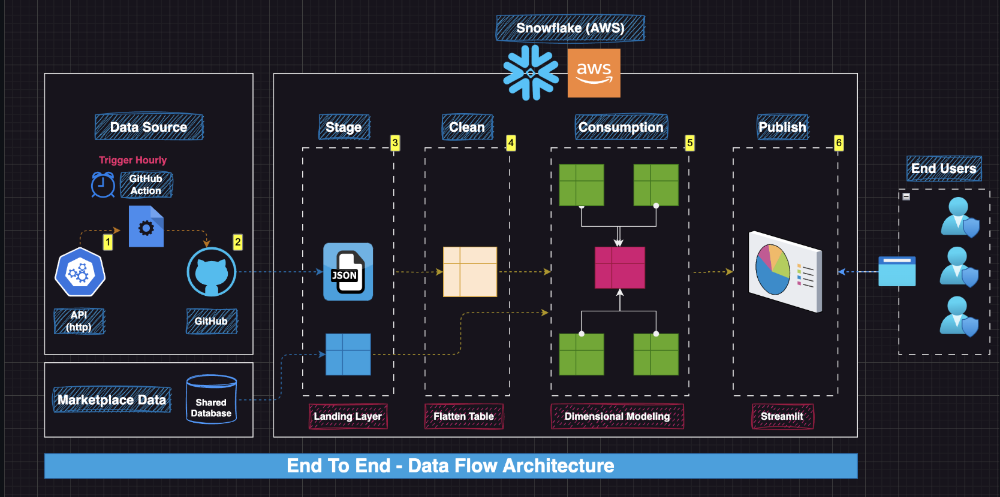
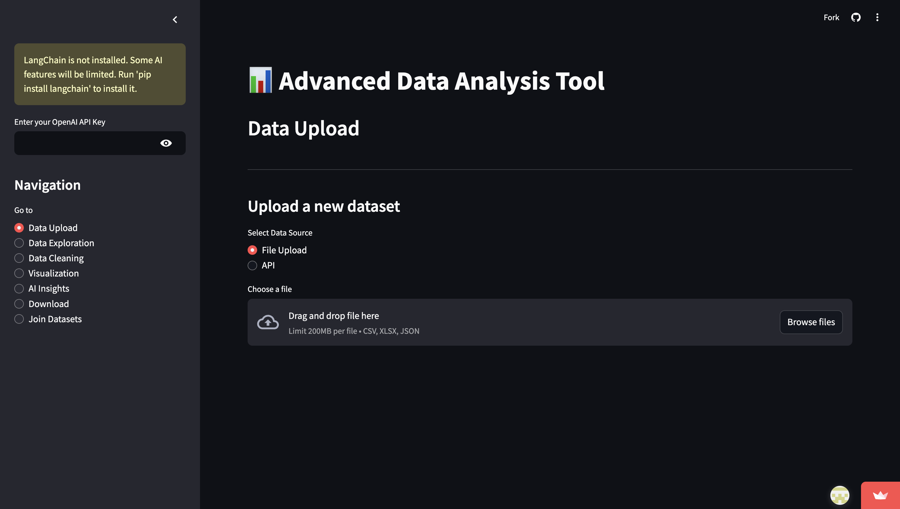
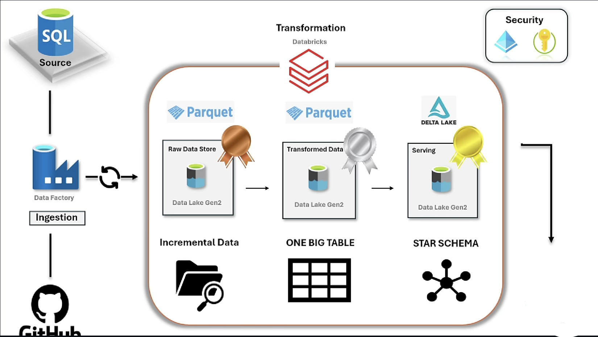
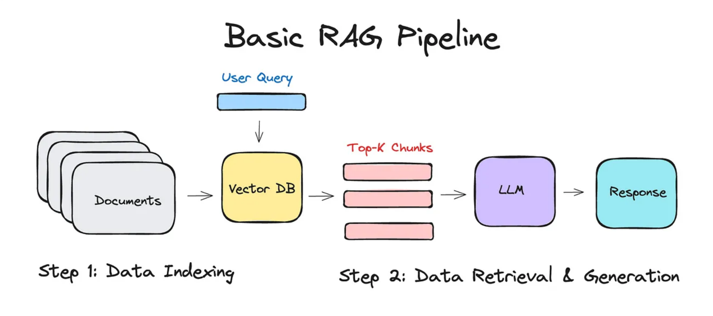
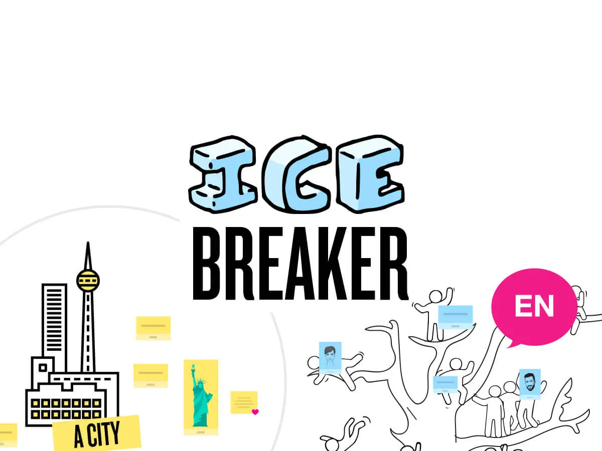
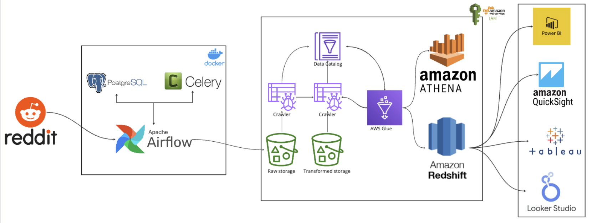

Designing test strategies for cloud-native, data-intensive, and AI-powered applications — from Playwright suites to LLM-as-judge validation.
QA automation engineer and SDET with experience in designing and executing test strategies for cloud-native, data-intensive, and AI-powered applications. I build scalable automation frameworks, drive shift-left testing, and validate non-deterministic LLM outputs using LLM-as-judge techniques.
Proficient in Python/pytest, Playwright (TypeScript), and Selenium — with hands-on experience testing AWS Lambda APIs, RAG pipelines, and AI guardrails. I bring a strong data engineering background to data validation, ETL reconciliation, and BI report testing.
May 2025 · CGPA 3.75/4.0
Relevant coursework: Big Data and Data Science, Natural Language Processing, Fundamentals of AI, Computer Algorithms.
Built strong foundations in programming, algorithms, and software engineering.
November 2025 – Present
July 2025 – October 2025
September 2023 – May 2025
January 2021 – February 2023

End-to-end Azure data engineering pipeline for healthcare RCM — integrating EMR and insurance claims from multiple hospital branches. Built unified data models for schema variations, fact/dimension tables, and KPI reporting (AR > 90 days, Days in AR, Net Collection Rate). Exposure to HL7, FHIR, and CPT standards.

End-to-end supply chain analytics using n8n and Quadratic — automated email-to-PostgreSQL ingestion, OTIF and Fill Rate KPIs with AI-powered analysis, real-time currency conversion, and prompt-based Python data cleaning and merging.

Azure-based streaming analytics integrating Weather API data through Azure Functions, Databricks, Event Hub, and Microsoft Fabric. Features Kusto DB storage, Power BI dashboards, and automated alerts via Data Activator.

Retrieval-augmented generation app using LangChain and OpenAI to answer questions grounded in document content — relevant to production RAG testing, retrieval accuracy, and response grounding validation.
View on GitHub
AI agent that discovers LinkedIn and Twitter profiles, scrapes activity, and uses GPT to generate personalized conversation starters — demonstrates LLM integration and API orchestration patterns.
View on GitHub
Extracts Reddit API data with Apache Airflow, stores in S3, catalogs with AWS Glue, queries via Athena, and loads Redshift — containerized with Docker for repeatable pipeline validation.
View on GitHubLayered data pipeline on Snowflake with automated ingestion, transformation, and reporting via GitHub Actions and native Snowflake features — clean, reliable data for downstream dashboards.
View on GitHub